02
On screen
flight recordings — click any shot to enlarge![The orrery tab mid-flight in HIP 71120, following the ship at three-times zoom: shaded planets and their moons spread around the star with docks marked as amber squares, the ship marker on its leg toward a ringed planet, the footer reading 'planet distances to scale, moons spread to be seen, order kept', and a note reading 'In supercruise to Benyovszky Gateway, 81 seconds out, somewhere in the 24 to 73 per cent of the way — estimated, the game does not report position'. The icy world 4 b is selected, its card reading 2,405 light-seconds from arrival, 0.06 G, 90 Kelvin, and its surface materials richest first — Selenium and Tellurium highlighted as rare, each annotated with how many the commander already carries](img/hud-orrery.png)
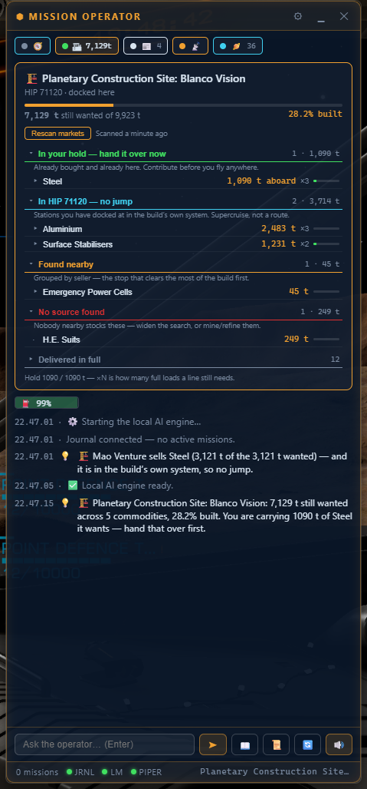
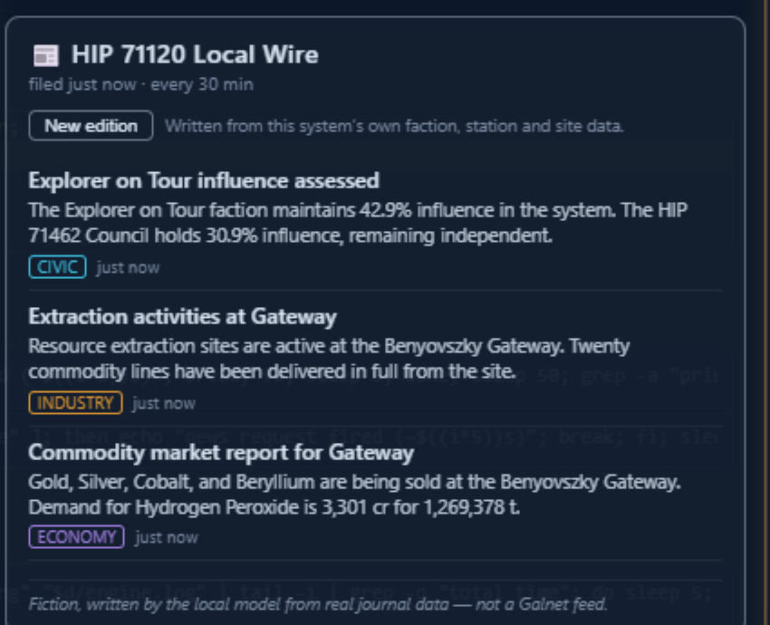
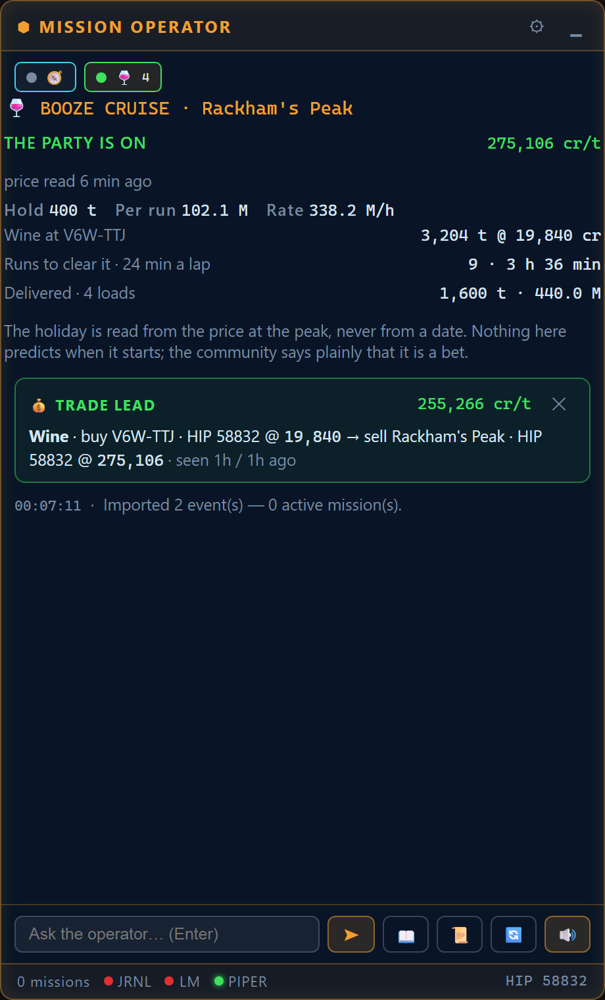
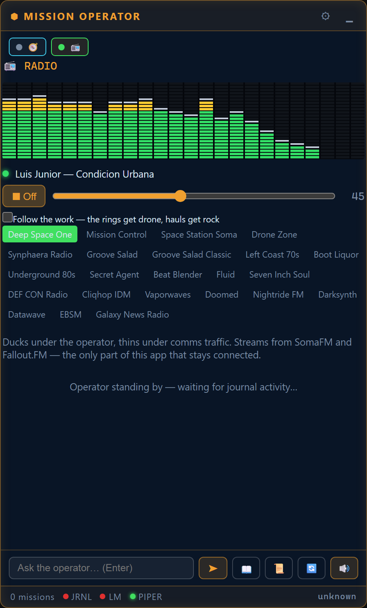
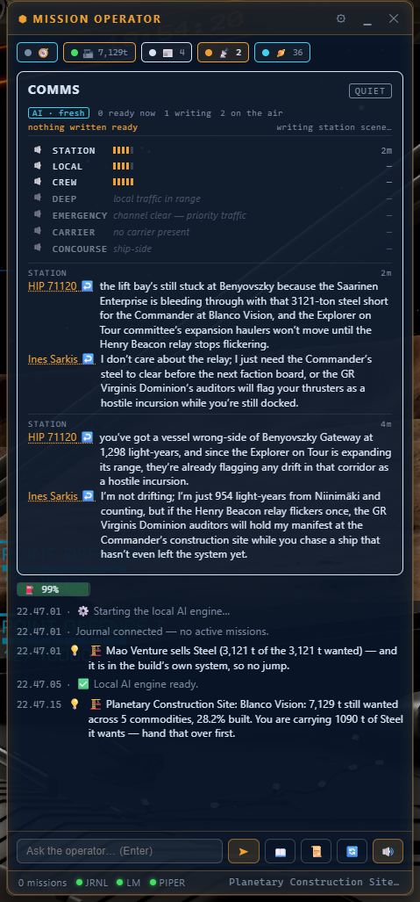
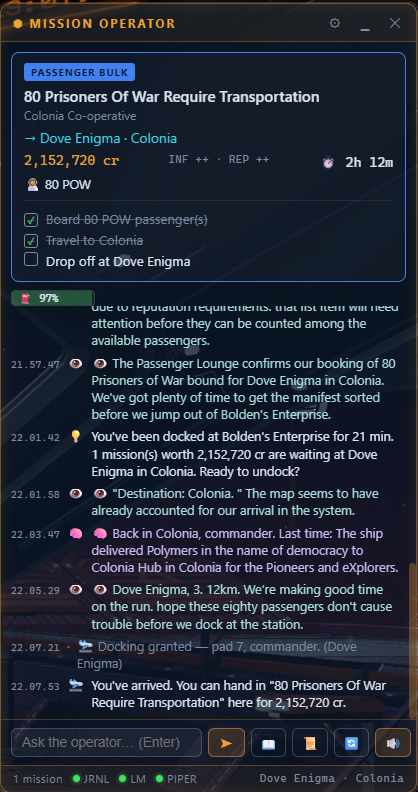
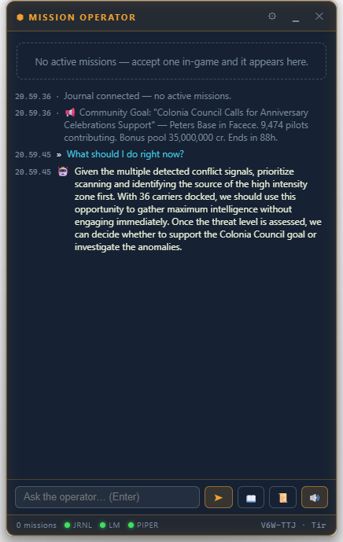
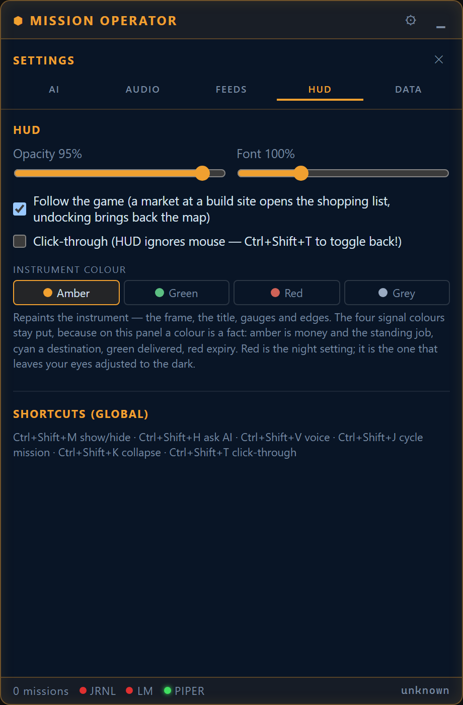
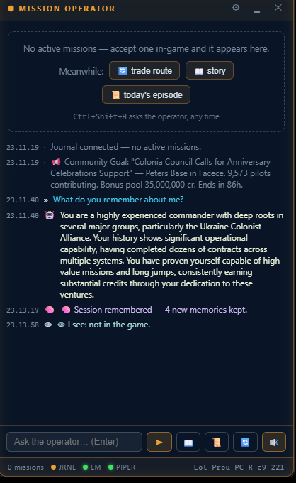
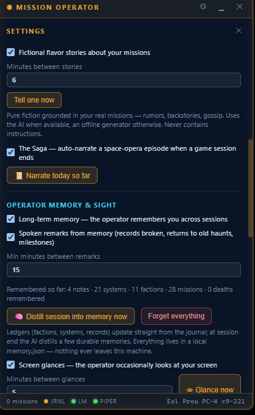
A companion tool for Elite Dangerous commanders
A small always-on-top panel that reads your Player Journal as you fly: mission cards with the objective checklist the game never gives you, live expiry timers, and an operator that notices when you have stalled and says so — out loud, in a neural voice synthesized on your own machine.
Ask it anything and the answer comes from your real missions, your real hold and the market you are actually docked at. Everything runs here — including the AI, which it installs itself.
Free hobby project. Two offline voices included. AI features optional.
🐧 Linux beta: .deb (147 MB) · AppImage (231 MB) — journals auto-detected from the Steam Proton prefix; X11 recommended (global hotkeys don't exist on Wayland); screen glances are Windows-only for now. Fresh out of the forge — reports welcome. AppImage users: install an emoji font (fonts-noto-color-emoji) if the buttons look empty.
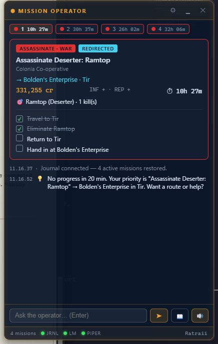










Click the download button above — you get a single file, ED-Mission-Operator-1.9.4-setup.exe (about 132 MB — it carries the offline voices). Your browser may ask where to save it; Downloads is fine.
Double-click the downloaded file. Windows will very likely show a blue "Windows protected your PC" screen. That's SmartScreen being cautious about a small hobby app that isn't code-signed — not a virus detection.
The installer needs no choices and no administrator password — it installs only for your user account and starts the app when done.
A small dark panel appears and floats above other windows — that's the operator. Drag it by its title bar to wherever suits your cockpit. It reads "Journal connected" at the bottom when it has found your game files (automatic — no setup needed if Elite has ever run on this PC).
In the game: Options → Graphics → Display → Borderless (a true Fullscreen display hides all overlays — this is a Windows rule, not the app's). Your active missions appear on the HUD by themselves; accept a new one at any mission board and the operator will introduce it, out loud.
Everything above already works. To give the operator its voice, its stories and its eyes, open Settings ⚙ → AI engine, choose "This app (no other software needed)", and press the button. Nothing else to install — the app fetches a small inference runtime and a model, picks the right one for your graphics card, and runs it all on this machine.
The download is about 4–6 GB depending on the model your card can take, one time, and it resumes if you cancel or lose connection. Progress shows in Settings; the HUD says "Local AI engine ready" when it's serving.
The model choice is made for you, and it's a Gemma: a vision model that grounds its talk in your real game data — the job, the payout, the deadline. In testing, bigger or roleplay-tuned models sound colourful but invent lore (station reputations and history that aren't there), so more parameters isn't better here.
The operator speaks out of the box (Alba, a Scottish neural voice — fully offline). In Settings ⚙ you can switch to the bundled male voice, download fifteen more with one click, adjust rate and volume, tune how chatty the storytelling is — or mute everything with the 🔊 button.
Want to talk back? Tick Voice input in the same Voice section and grab the one-time speech-recognition download (~150 MB, fully local). Then hold CtrlShiftSpace — even mid-flight — speak, release, and the operator answers.
Windows Settings → Apps → Installed apps → ED Mission Operator → Uninstall. It leaves your game and its files untouched (it never wrote to them in the first place).
| Keys | Action |
|---|---|
| Ctrl Shift M | Show / hide the HUD |
| Ctrl Shift H | Ask the operator "what should I do right now?" |
| Ctrl Shift V | Toggle voice |
| Ctrl Shift J | Cycle through active missions |
| Ctrl Shift K | Collapse to a compact bar |
| Ctrl Shift T | Click-through mode (mouse ignores the HUD) |
| Ctrl Shift Space (hold) | Push-to-talk — speak to the operator (Voice input, optional) |
No. Missions, voices, leads and stories all work offline. Internet is only touched for the one-time AI engine + model download, extra voices, or the optional community lookups — Spansh routes, galaxy-wide markets, the exploration catalogue, Galnet news — each on your explicit click, all off by default. The one exception is the music player: switch it on and it streams continuously from SomaFM until you switch it off. It ships off.
The HUD itself is negligible. AI answers use your GPU for a few seconds when generated — and the built-in advisor deliberately recommends models that leave the game's share of the graphics card alone.
Open, private groups and solo — it only reads what the game writes locally, so it works identically everywhere, including Horizons and Odyssey, on foot or in a ring.
The HUD degrades politely: no AI set up → deterministic guidance; no voice → text; no game running → it waits. Restart the app and it rebuilds everything from the journal.